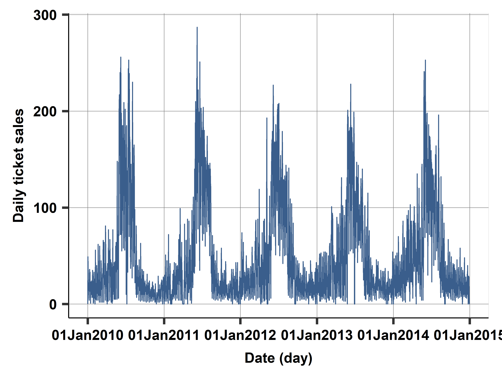
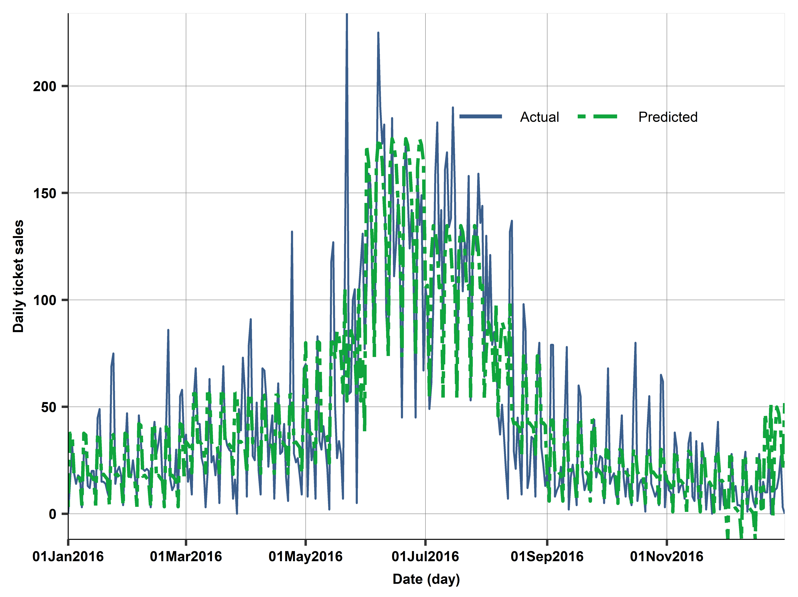
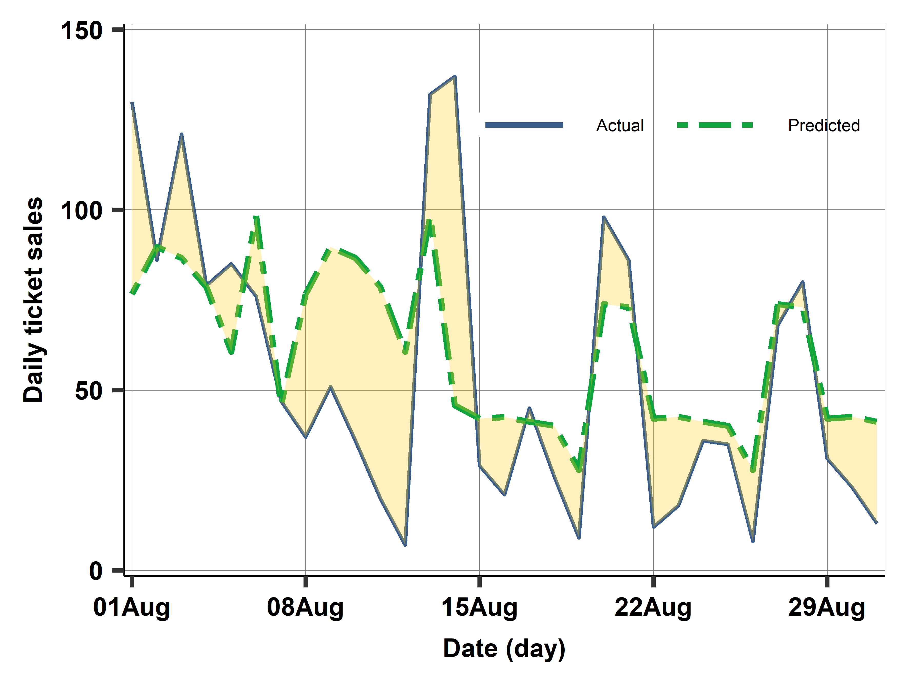
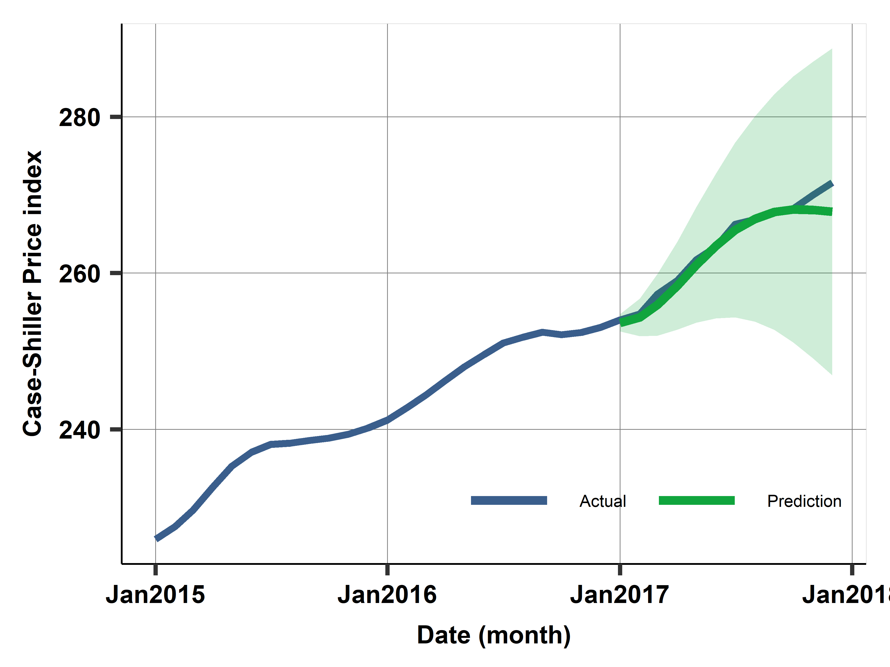

Long-horizon:
Seasonality, trend and predictable events
Long-horizon forecasting: Seasonality and predictable events
- Look for aspect of data that matter for long time
- Focus on predictable aspects of time series
- Trend(s) + Seasonality + Other regular events
- Two options to model trend: estimate average change or trend line
- \(y = f(T,S,E)\) or
- \(\%\Delta y \text{ or } \Delta y =g(T,S,E)\)
- Seasonality: ie model with set of variables (11 months), maybe interactions
- Other regular events - set of binary vars (War, Covid, New Policy, etc)
Long-horizon forecasting: Growth rates
First model - estimate average change:
\[\hat{\Delta}y = \hat{\alpha}\]
For prediction this means:
\[
\begin{aligned}
\hat{y}_{T+1} &= y_T + \hat{\Delta}y \\
\hat{y}_{T+2} &= \hat{y}_{T+1} + \hat{\Delta}y = y_T + 2 \times \hat{\Delta}y \\
\dots \\
\hat{y}_{T+H} &= y_T xx+ H \times \hat{\Delta}y
\end{aligned}
\]
Long-horizon forecasting: Trends
Estimate trend line: \[\hat{y}_t = \hat{\alpha} + \hat{\delta}t\]
- \(\hat{\alpha}\) is predicted \(y\) when \(t = 0\)
- \(\hat{\delta}\) tells us how much predicted \(y\) changes if \(t\) is increased by one unit.
- You can also use more complex trends. (but one should still be concerned about overfitting)
Long-horizon forecasting: Trends - compare options
- Difference in models
- Model changes:
- Assumes that \(y\) continues from the last observation, and increase by the same amount each time. What if Last observation is unusual?
- Model trend line
- Assumes that \(y\) remains close to the trend line. Last unusual observation would not matter for the forecast, because it would be the trend line.
- Neither approach is inherently better than the other
Long-horizon forecasting: Seasonality
- Capture regular fluctuations
- Months, days of the week, hours, combinations
Case study: ABQ swimming
- Swimming pool data
- Albuquerque (ABQ), New Mexico, USA
- Big data, transaction level entry data logged from sales systems
- 1.5m observations
This CS:
- Sample: Single swimming pool
- Aggregated: number of ticket sales per day
- After some sample design - regular tickets only
Case study: Modelling
- Trend is simple – use simple linear trend: \(\alpha t\)
- Maybe not really important at all
- Perhaps consider exponential trend? (log-linear model)
- Seasonality is important and tricky
Case study: Daily ticket sales
Daily Sales 5Yrs
Case study: Monthly and daily seasonality
Case study: Daily ticket sales: A heatmap
- Tool to model seasonality
- Each cell is average sales for a given combination of day and month over years
- Colors help see pattern
Case study: Modeling
- Trend is simple - linear trend
- Seasonality is tricky - need to model and simplify
- Months
- Days of the week
- USA holidays (dummies)
- Summer break (depends?)
- Interaction of summer break and day of the week
- Interaction of weekend and month
Case study: Model features and RMSE
| M1 |
X |
X |
|
|
|
|
32.35 |
| M2 |
X |
X |
X |
|
|
|
31.45 |
| M3 |
X |
X |
X |
X |
|
|
29.46 |
| M4 |
X |
X |
X |
X |
X |
|
27.61 |
| M5 |
X |
X |
X |
X |
X |
X |
26.90 |
| M6 (log) |
X |
X |
X |
X |
X |
|
30.99 |
| M7 (Prophet-ML) |
X |
X |
X |
X |
N/A |
|
29.47 |
Note: Trend is linear trend, days is day-of-the-week, holidays: national US holidays, school*days is school holiday (mid-May to mid-August and late December) interacted with days of week.
RMSE is cross-validated.
Source: swim-transactions dataset.
Daily time series, 2010–2016, N=2522 (work set 2010–2015, N=2162).
Case study: Compared actual vs predicted on holdout set (2016)

Case study: Diagnostics - holdout set (2016)
Actual vs predicted August 2016

Case study: Diagnostics vs model building
- Here we used diagnostics to learn about what to expect, strength and weaknesses of the already selected model.
- This means, no going back to drawing board.
- But, we could have said, lets run some checks on the training set and maybe alter the model accordingly.
- As we normally do with scatterplots, lowess, tabulations, etc
- Here: something weird happening in December.
- Act, build a new model and test, etc.
ARIMA
Bringing the Big Guns
Short-horizon forecasting: ARIMA
- ARIMA(p,d,q) models that are generalizations of the AR(1) model
- can approximate any pattern of serial correlation.
- ARIMA models are put together from three parts: AR(p), I(d) and MA(q).
- but What are these?
Short-horizon forecasting: ARIMA(p,d,q)
- The ARIMA model combines three approaches to modeling time series data:
- AR(p): autoregressive models, We have seen this
- I(d): models of differences, This is new
- Relates to models that you first take the difference before modeling.
- For example \(\Delta y_t = y_t - y_{t-1} = \alpha\) is a I(1) model
- MA(q) models: moving average models: Concentrates on the error term, and how much it “depends” on past errors.
- For example \(y_t = e_t + \theta e_{t-1}\) is a MA(1) model
- \(\theta\) has to be estimated via maximum likelihood, not OLS.
ARIMA: Mix and Match
- ARIMA(2,1,0): \(\Delta y_t = \beta_0 + \beta_1 \Delta y_{t-1} + \beta_2 \Delta y_{t-2} + e_t\)
- ARIMA(0,1,1): \(\Delta y_t = \beta_0 + \theta e_{t-1} + e_t\)
- ARIMA(0,2,2): \(\Delta^2 y_t = \beta_0 + \theta_1 e_{t-1} + \theta_2 e_{t-2} + e_t\)
- ARIMA(p,d,q): \(\Delta^q y_t = \beta_0 + \sum_{i=1}^{p} \beta_i \Delta^q y_{t-i} + \sum_{j=1}^{q} \theta_j e_{t-j}+e_t\)
In practice, You rarely see \(d>2\), although \(p\) and \(q\) can be larger (depending on frequency of data)
How to choose (p,d,q)?
- Empirical approach
- Whichever works best in a cross-validated exercise!
- Try out a few and pick the one that works best
- “auto-arima” - an algo that tries out many options
- keep it simple, \(d = 0, 1\) and \(p = 0, 1, 2\) and \(q = 0, 1, 2\) rarely more
How to choose (p,d,q)?
Box-Jenkins Methodology
Step 1: Determine \(d\). Typically you test if the data is stationary (ADF test or PP test). You difference the data until it is stationary.
Step 2: To determine \(p\) and \(q\) you look at the ACF and PACF of the differenced (if applicable) data.
- ACF or Autocorrelation function
- \(corr(y_t, y_{t-1})\), \(corr(y_t, y_{t-2})\), etc.
- Helps Identify MA component (based on spikes)
- PACF or Partial autocorrelation function
- \(y_t = \beta_0 + \beta_1 y_{t-1}+ e_t\)
- \(y_t = \beta_0 + \beta_1 y_{t-1}+\beta_2{t-2} y_{t-2} e_t\),etc
- Helps Identify the AR component
Case study: Case- Shiller home price index
- Case-Shiller home price index, Los Angeles
- Monthly index of home prices
- Data available: fred.stlouisfed.org
- Use 18 years of monthly data
Case study: Case Shiller home price data
- 18 years of data 2000-2017
- work: 2000-2016, holdout is 2017
- cross-validate with rolling window, 4-fold
- train is 2000-2012, test is 2013
- …
- train is 2003-2015, test is 2016
- Predict 12 months ahead
- RMSE - symmetric and quadratic loss
- Assume getting index right matters exactly the same
Case study: target variable
- What should be the target variable?
- The price index
- The log of the price index
- First difference <- Shortcut to assume I(1) process
- We’ll try out, and pick via cross-validation
- The model should include seasonal dummies (could be more complicated)
- The model may include a linear trend or capture it with \(\Delta y\) as target
- The model can have any form of ARIMA
Case study: Case- Shiller home price index - prediction from ARIMA models
| M1 |
p |
NO |
X |
X |
|
|
|
31.9 |
| M2 |
p |
YES |
1 |
1 |
2 |
|
|
9.5 |
| M3 |
p |
YES |
X |
1 |
1 |
1 |
0 |
4.1 |
| M4 |
p |
YES |
X |
X |
2 |
0 |
0 |
2.3 |
| M5 |
dp |
NO |
X |
X |
|
|
|
18.8 |
| M6 |
lnp |
YES |
X |
0 |
2 |
0 |
0 |
7.2 |
Case study: Prediction with best model M4: Uncertainty

Figure 1
Stata Corner
In Stata, the easiest way to estimate ARIMA models is using arima command:
- ARIMA(2,2,2) model:
arima y, arima(2,2,2)
Predictions are a bit tricky. You can use predict command with the dynamic option to predict out-of-sample values. But also need to indicate “which” periods to start using the model predictions
predict yhat, dynamic(ym(2017,1)) [y]
yhat is the new variable, ym(2017,1) indicates the first period of 2017, and [y] indicates that we want to predict the “real” dependent variable. Not the changes or transformations.
No built-in option for CI predictions.
Vector Autoregression
When you need more than one variable
VAR
- Better forecasts with the help of other variables, at least for short forecast horizons.
- Need forecasts of the \(x\) variable as well – we need a model.
- Vector autoregression (VAR), is a method that incorporates other variables in time series regressions and can use those other variables for forecasting \(y\).
- Technically, you are not “ONLY” forecasting \(y\) anymore, but a set of time series regressions.
- A set of time series regressions.
\[{y_t, x_t, z_t} =W_t= \beta_0 + W_{t-1}\beta_1 + W_{t-2}\beta_2 + \dots + W_{t-p}\beta_p + e_t
\]
VAR: simplest model
The simplest VAR model has \(y\) and one \(x\) variable, and it includes one lag of each = VAR(1) model.
It assumes that all data have the same frequency. \[\begin{align*}
y_t^E &= \beta_{10} + \beta_{11} y_{t-1} + \beta_{12} x_{t-1} \\
x_t^E &= \beta_{20} + \beta_{21} y_{t-1} + \beta_{22} x_{t-1}
\end{align*}
\]
VAR forecast
One-period-ahead forecast for \(y\), only need estimates from the first one: \[\hat{y}_{T+1} = \hat{\beta}_{10} + \hat{\beta}_{11} y_T + \hat{\beta}_{12} x_T
\]
For forecasting \(y\) further ahead, we do need all coefficient estimates, and forecast values of \(x\) as well.
A two-period-ahead forecast of \(y\) from a VAR(1) is
\[
\hat{y}_{T+2} = \hat{\beta}_{10} + \hat{\beta}_{11} \hat{y}_{T+1} + \hat{\beta}_{12} \hat{x}_{T+1}
\]
and \(\hat{x}_{T+1}\) and \(\hat{y}_{T+1}\) are from the first forecast.
Forecasts for \(T + 3, T + 4, etc.,\) are analogous.
VAR characteristics
There are four important characteristics of a VAR:
- A VAR has a regression for each of the variables.
- The right-hand side of each equation has all variables.
- Right-hand-side variables are in lags only.
- All right-hand-side variables in all regressions have the same number of lags
Note: More often than not, you need the “system” to be stable/stationary. This is a bit more complex than just checking the target variable. (You need to see the Matrix of coefficients)
Case study: Unemployment Rate
Case study: Employed Population
Case study: Case- Shiller home price index - Model selection 2
Run the VAR model and compare to previous results.
| M1 |
p |
NO |
X |
X |
|
|
|
31.9 |
| M2 |
p |
YES |
1 |
1 |
2 |
|
|
9.5 |
| M3 |
p |
YES |
X |
1 |
1 |
1 |
0 |
4.1 |
| M4 |
p |
YES |
X |
X |
2 |
0 |
0 |
2.3 |
| M5 |
dp |
NO |
X |
X |
|
|
|
18.8 |
| M6 |
lnp |
YES |
X |
0 |
2 |
0 |
0 |
7.2 |
| M7a |
dp |
VAR |
|
|
|
|
|
7.8 |
| M7b |
dp |
VAR |
X |
|
|
|
|
4.5 |
- In this case study, VAR did not improve on ARIMA.
VAR in Stata
Stata has a feature for the estimation of VAR models called…Var
var depvarlist [if] [in] [,lags(#) exog(varlist) Other]
For prediction look into fcast, predict or forecast
External validity in time series
External validity is about the stability of patterns in the data
- Such as trends, seasonality (Do they repeat? or do we need to update?)
Stationarity is what we look for:
- Distribution of the target, predictors is stable over time
- Correlation patterns also stable over time
- We can then make predictions of the future!
External validity is massive risk with time series by design: predict for future
What if we update the model with NEW data. How well would it do?
Case study: Case- Shiller home price index - model fit on test sets
Four test set (in work set) with rolling window CV. RMSE in each test set for each model.
| M1 |
14.90 |
17.58 |
34.44 |
48.58 |
31.9 |
| M2 |
14.83 |
8.39 |
6.23 |
5.52 |
9.5 |
| M3 |
6.68 |
1.39 |
3.29 |
3.22 |
4.1 |
| M4 |
2.22 |
1.96 |
2.88 |
1.20 |
2.2 |
| M5 |
33.94 |
9.79 |
10.44 |
7.39 |
18.8 |
| M6 |
2.49 |
4.95 |
9.22 |
9.54 |
7.2 |
| M7a |
13.30 |
5.85 |
3.52 |
4.28 |
7.8 |
| M7b |
5.24 |
2.51 |
5.18 |
4.75 |
4.5 |
Case study: Prediction with best model M4 for 2018
Summary
- Time series prediction is both simple and very hard
- Simple as some basic models work okay
- Model trend as first difference or linear trend
- Model seasonality, regular events
- Some basic method of capturing serial correlation
- Time series prediction model building is also very hard
- Getting seasonality, holidays, changing patterns right
- Getting target variable and ARIMA(p,d,q) selection needs competing models
- Most importantly: external validity is a huge problem
- Stability may easily break down, and there is nothing we can do.